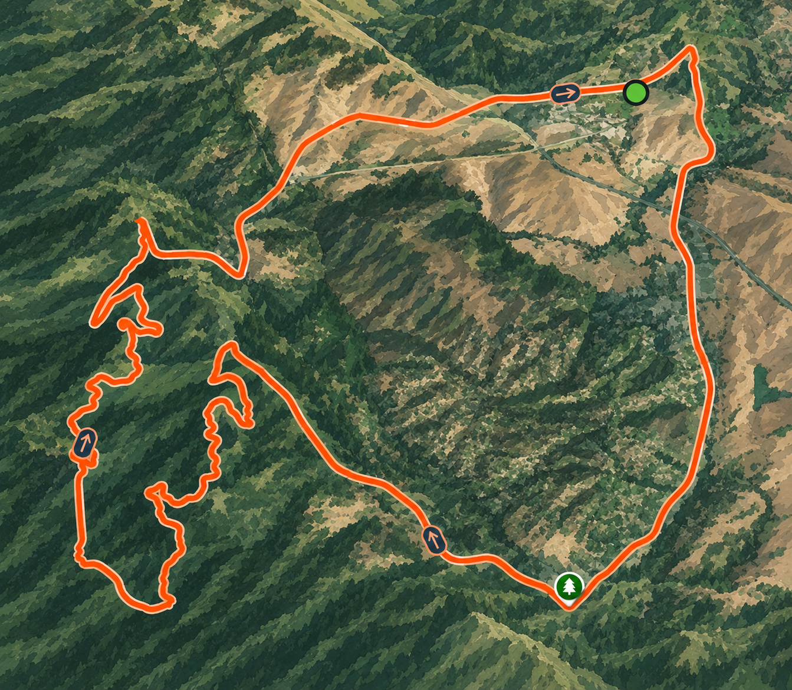
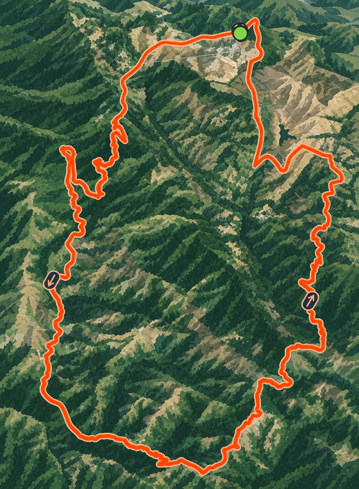

The club's original ride — a short, steep climb that's become the anchor of the whole week: show up, chase the segment, go home. Evening slot, built to fit around school.

The weekend's longer ride climbs out past the ridge and onto West Alpine Road — quieter, more open, less about chasing a single segment and more about putting in real miles together. It's the ride the rest of the week points toward.
Both rides meet at Stanford Hills Park, Menlo Park — Wednesdays at 4:45 PM, Saturdays at 9:30 AM.
Click below to see the steps to join and get on your first ride.
Join 4 current members on the Peninsula's toughest climbs.